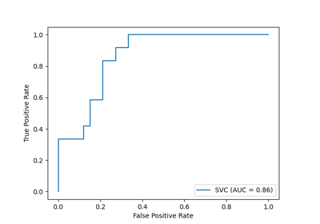

sklearn.metrics.plot_roc_curve¶
-
sklearn.metrics.plot_roc_curve(estimator, X, y, pos_label=None, sample_weight=None, drop_intermediate=True, response_method='auto', name=None, ax=None, **kwargs)[source]¶ Plot Receiver operating characteristic (ROC) curve.
Extra keyword arguments will be passed to matplotlib’s
plot.Read more in the User Guide.
- Parameters
- estimatorestimator instance
Trained classifier.
- X{array-like, sparse matrix}, shape (n_samples, n_features)
Input values.
- yarray-like, shape (n_samples, )
Target values.
- pos_labelint or str, default=None
The label of the positive class. When
pos_label=None, if y_true is in {-1, 1} or {0, 1},pos_labelis set to 1, otherwise an error will be raised.- sample_weightarray-like, shape (n_samples, ) or None, default=None
Sample weights.
- drop_intermediateboolean, default=True
Whether to drop some suboptimal thresholds which would not appear on a plotted ROC curve. This is useful in order to create lighter ROC curves.
- response_method{‘predict_proba’, ‘decision_function’, ‘auto’} default=’auto’
Specifies whether to use predict_proba or decision_function as the target response. If set to ‘auto’, predict_proba is tried first and if it does not exist decision_function is tried next.
- namestr or None, default=None
Name of ROC Curve for labeling. If
None, use the name of the estimator.- axmatplotlib axes, default=None
axes object to plot on
- Returns
- viz
sklearn.metrics.plot.RocCurveDisplay object that stores computed values
- viz
Examples using sklearn.metrics.plot_roc_curve¶
